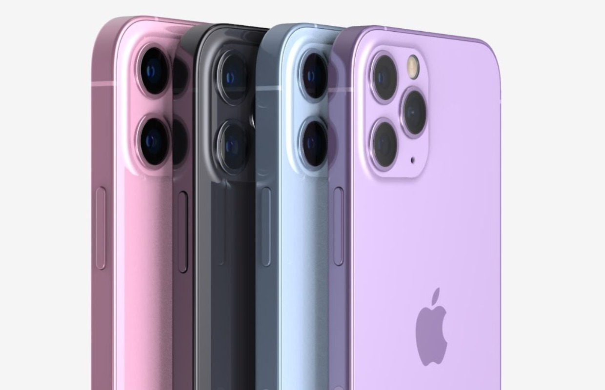

Tātad, kas ir Iphone?
iPhone ir kompānijas Apple Inc. izstrādāts Interneta un multimediju atbalstošs viedtālrunis.
Informāciju par pirmā iPhone viedtālruņa izlaišanu tirgū 2007. gada 9. janvārī paziņoja Apple izpilddirektors Stīvs Džobss,
bet tirdzniecībā tika palaists 2007. gada 29. jūnijā. Par 5. paaudzes iPhone 4S tika paziņots 2011. gada 4. oktobrī un tika palaists tirdzniecībā desmit dienas vēlāk.
Šobrīd (2022. gadā) paši jaunākie modeļi, kas pašlaik ir pieejami iegādei, ir iPhone 13 mini, iPhone 13, iPhone 13 Pro un iPhone 13 Pro Max.

atpakaļ